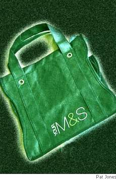

R. S. Gwynn
In Chalfont St Giles
Satan shops at Marks & Spencer
With a trolley heaped with cake,
Shedding, like a swinging censer,
Whiffs of brimstone in His wake.
Everything there sports one label
(At a fair though upscale price).
Swarthy stockboys shout in Babel,
Placing picnic things on ice.
Stabbing goodies with His pitchfork —
Capons, capers, casual clothes —
He slows down to ponder which pork
Sausage most excites His nose.
Loosed upon their shops by Milton,
Now, midst sprats and Mozart tinned,
He unveils a putrid Stilton
To remind them how they’ve sinned.
He wolfs down endangered species,
Grills with Amazonian wood,
Chips the poles for ice with ease; He’s
Got a credit line. It’s good.
Satan, consummate consumer,
Thrives in both the boom and bust.
See Him give a housewife room! Her-
self ahead, He swells with lust.
Is He Tory? Is He Labour?
Are His economics planned?
Do thy best to do thy neighbour
In this green and pleasant land.
“Paper? Plastic?” croons the checkout.
Satan smiles and answers, “Both.”
Mrs. Bean now sticks her neck out
From a slow queue bagged by Sloth:
“Sinful Satan,” cries the woman,
“Are Your actions ever Green?”
Satan nods and smirks to someone,
“Let’s recycle . . . Mrs. Bean.”
Lament for the Names Lang Syne
Leaksville, N. C. (1797-1967)
Bootie, Cootie, Hootie, and Red,
Rooster, Jeepy, Sny, and June,
Hambone, Corky, and SwimmyhHead,
Greenie, Weenie, Puss, and Moon,
Stinky, Winkie, Goat, and Spud,
Pinkie, Toodie, and Greasy J.,
Buddy—ro, Buddy, and just plain Bud —
Timor mortis conturbat me.
Strangler, Babbie, Sis, and Twat,
Ikey, Eekie, Lum, and Buck,
Squabby, Knobby, Monk, and Squat,
Preacher, Rabbit, Sack, and Duck,
Bimbo, Fire Chief, Goof, and Jake,
Doodie, Rubber, Deuce, and Trey,
Whitey, Blackie, Bull, and Snake —
Timor mortis conturbat me.
Puddin’, Oggie, Bugg, and Tick,
Hoovie, Groovie, Ape, and Gam,
Buster, Punkin’, Goat, and Slick,
Meatball, Big Train, Nub, and Ham,
Eudie, Stumpy, Chunks, and Shag,
Eeenie, Meenie, and Whatchasay,
Mustard, Turbo, Crab and Rag —
Timor mortis conturbat me.
Prince Pedro, Skillet, Buffalo Bob,
Peewee, Little Bone, A.O.K.,
Slobber, Booger, Spit, and Blob —
Timor mortis conturbat me.
R. S. (Sam) Gwynn has taught at Lamar University in Beaumont, Texas, since 1976. He was recently named distinguished poet-in-residence. His poetry has appeared recently in Poetry and The Sewanee Review, and his review of Clive James’s selected poems will be published in a forthcoming issue of The Hudson Review. He is a past winner of the Michael Braude Award for Light Verse from the American Academy of Arts and Letters.
|